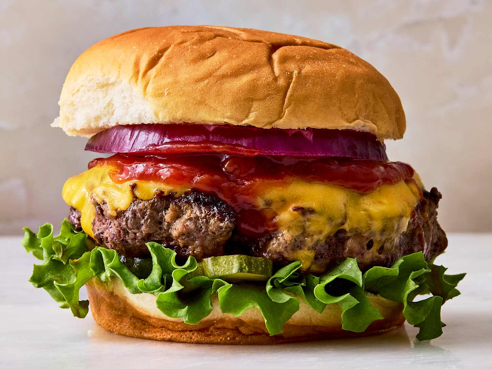

Hamburger
Back home

Description
A hamburger is a sandwich consisting of one or more meat patties, typically beef, placed inside a sliced bun. The patty is often served with various toppings such as lettuce, tomato, onion, pickles, cheese, and condiments like ketchup, mustard, and mayonnaise.
hamburguer a popular fast food item. Because of its widespread availability and popularity, it is often considered a symbol of American cuisine.
Ingredients
- Ground beef
- Buns
- Lettuce
- Tomato
- Onion
- Pickles
- Cheese (optional)
- Ketchup, mustard, mayonnaise (optional)
Steps
- Preheat the grill or stovetop pan to medium heat.
- Form the ground beef into patties and season with salt and pepper.
- Place the patties on the grill or pan and cook for 5-7 minutes on each side, until cooked through.
- While the patties are cooking, lightly toast the buns on the grill or in a toaster.
- Once the patties are cooked, place each patty on a toasted bun.
- Add your desired toppings and condiments to the hamburgers.
- Serve immediately and enjoy!